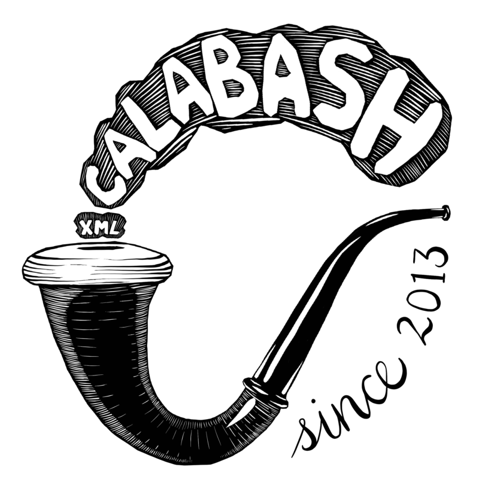

XML Calabash User GuideVersion 3.0.0-alpha7for XML Calabash 3.0.0-alpha7Updated: 24 Dec 2024Copyright © 2024 Norman Walsh.docs.xmlcalabash.comTable of Contents1. InstallationSystem configuration2. Running XML CalabashThe run commandThe help commandThe version command3. Pipelines vs. Graphs4. The interactive debuggerCommand summaryDebugger example5. Schematron assertionsDirectly embedded assertionsAssertions by referenceA. Configurationcc:xml-calabashcc:graphvizcc:inlinecc:mimetypecc:paged-mediacc:proxycc:saxon-configuration-propertycc:send-mailcc:serializationcc:system-propertycc:threadingB. Tracing executionThe trace vocabularyC. Change logList of Figures3.1. Sample debugging pipeline3.2. The pipeline model3.3. The pipeline graph modelList of Tables1.1. Default MIME type mappings